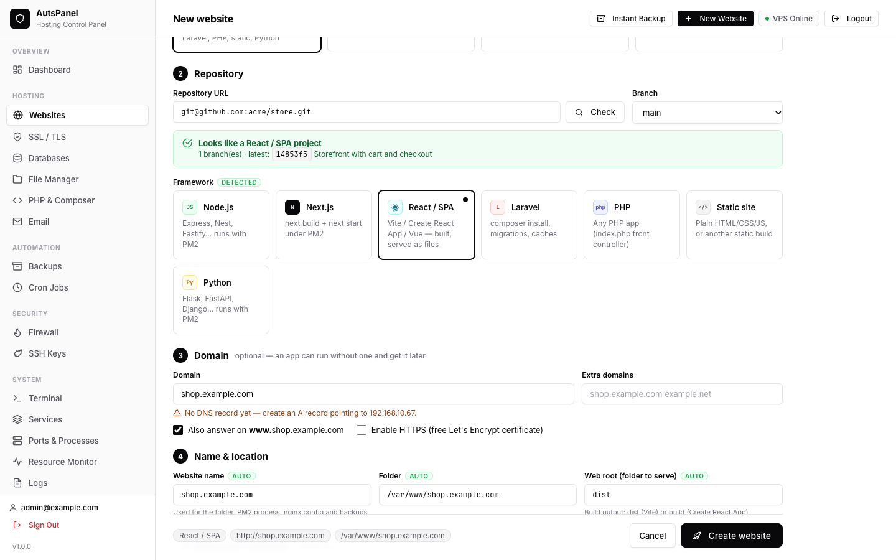
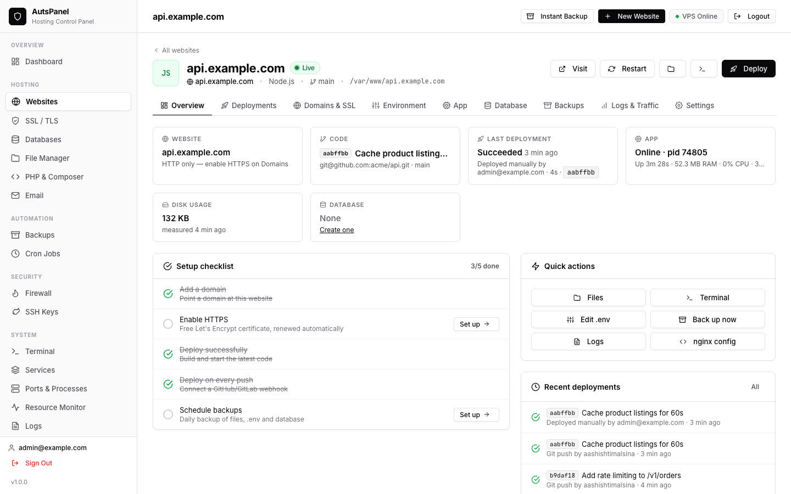
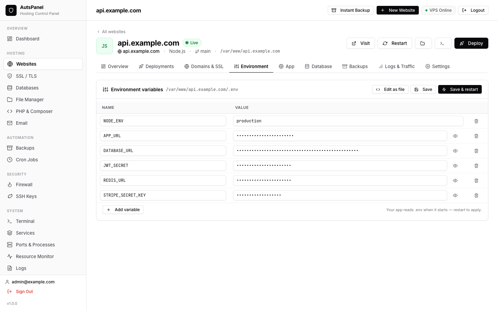
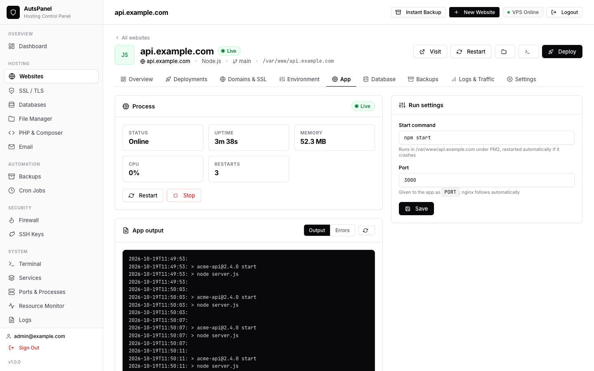

Websites
Every site or app on the server is a website: one page holds its domains and HTTPS, code and deployments, .env, app process, database, backups and logs.
Create a website
Click New Website in the top bar and choose how the site starts:
| Start from | Use it for |
|---|---|
| Deploy from Git | Node.js, Next.js, React/Vite/Vue, Laravel, PHP, Python or static sites in a GitHub, GitLab, Gitea or Bitbucket repository. |
| WordPress | A new WordPress site with its own database and admin account. |
| Empty website | HTML or PHP files you upload yourself, for example from another host. |
| Reverse proxy | Anything already listening on a port — a Docker container, another service, or the panel itself. |
For Git, paste the repository URL. AutsPanel inspects it and fills in the framework, branch, build and start commands, web root and PHP version. The folder (/var/www/<name>) and a free port are suggested automatically — every value can be changed.

Enter the domain. A live DNS check shows whether it already points to this server; tick Enable HTTPS when it does. For Laravel and WordPress, keep Create a database ticked — the credentials are written to .env or wp-config.php.
Click Create website. One job clones the code, writes .env, runs the deploy script, starts the app and checks it answers, configures nginx and issues the certificate.
Private repository? Go to Security → SSH Keys, click Generate deploy key, add the key to the repository as a read-only deploy key and use the SSH URL (git@github.com:you/app.git).
Supported stacks
| Stack | How it runs | Default deploy script |
|---|---|---|
| Node.js | PM2 runs npm start (or node index.js) behind an nginx proxy | npm ci (or yarn/pnpm), npm run build if present |
| Next.js | PM2 runs npm start on the site's port | install, npm run build |
| React / Vite / Vue | Static files from dist or build with an index.html fallback | install, npm run build |
| Laravel | PHP-FPM, web root public | composer install --no-dev, migrations (with a database), storage:link, config/route/view cache |
| PHP | PHP-FPM with your chosen version | composer install if there is a composer.json |
| WordPress | PHP-FPM with WordPress rules | Installed with WP-CLI |
| Python | PM2 runs .venv/bin/python main.py or app.py — change it to gunicorn or uvicorn if you like | virtualenv + pip install -r requirements.txt |
| Static | nginx serves the folder | None |
| Reverse proxy | nginx proxies to a port | None |
The website page
Open a website from the list to manage it. The tabs are:
- Overview — status, last deployment, runtime, disk and database size, and a setup checklist.
- Deployments — deploy, history with logs, rollback and push-to-deploy. See Git deployments.
- Domains & SSL — domains, DNS status, HTTPS, online/offline, web root, upload limit and the nginx config. See Domains & SSL.
- Environment — the
.enveditor. - App — the PM2 process for Node.js and Python apps.
- PHP — PHP version, Composer and the Laravel scheduler.
- Database — create a database, link an existing one, or link the one the site's configuration already uses. See Databases.
- Backups — back up now, restore and schedule. See Backups.
- Logs & Traffic — traffic statistics, access, error and app logs.
- Settings — description, repository and branch, proxy target, and delete.

Environment variables
The Environment tab edits the .env file in the site folder. Values that look like secrets are hidden until you reveal them, comments and order are kept, and keys missing compared to .env.example are listed. Use Save & restart for Node.js apps or Save & cache config for Laravel.

Apps and processes
Node.js, Next.js and Python apps run under PM2. The App tab shows status, uptime, CPU, memory and restarts, the output and error logs, and lets you change the start command and port. When the port changes, the nginx proxy follows automatically. Apps restart if they crash and start again after a reboot.

Import existing nginx sites
nginx sites that were created outside AutsPanel are listed under Other nginx sites on the Websites page. Click Manage as website to turn one into a website. AutsPanel reads its domains, root and type, and links a local database if it finds one in the site's .env or wp-config.php.
Delete a website
Settings → Delete website removes the website from the panel, stops its app and removes its scheduled jobs. Tick what else should go: the nginx site and its certificate, all files in the folder, and the database with its user. You confirm by typing the website's name.
Frequently asked questions
Can I change the folder or port that AutsPanel suggests?
Yes. The suggestions are only defaults. You can change the folder, port, web root, branch, build and start commands before creating the website, and most of them later on the Settings tab.
How do I host a Next.js app?
Create a website from your Git repository. AutsPanel detects Next.js, runs the install and build, starts it with PM2 on a free port and proxies your domain to it.
How do I host a React or Vite single-page app?
Create a website from Git. AutsPanel builds it on every deploy and serves the dist or build folder with a fallback to index.html, so client-side routes work on refresh.
Last updated 2026-10-19 · Improve this page on GitHub